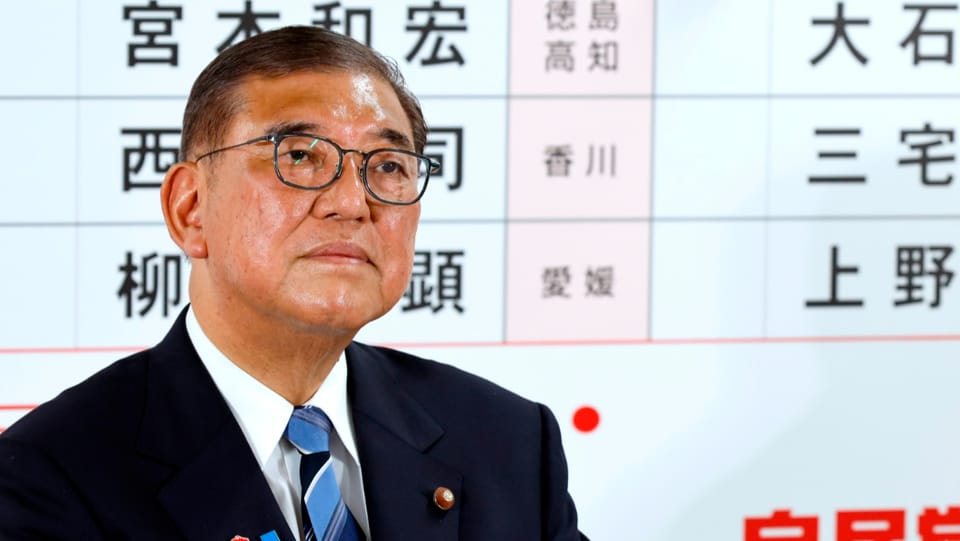

世界苦茶07月23日新闻 | 29条 | 美国与日本菲律宾达成贸易协议

美国与日本菲律宾达成贸易协议 | 石破茂宣布八月末前辞职 | OpenAI与甲骨文达成数据中心协议 | 美国再退出教科文组织
今日三条新闻分析
苦茶数据
美元兑人民币：7.16（昨日7.17，前日7.18）
美元兑日元：146.78（昨日147.75，前日148.49）
上证指数：3608（昨日3581，前日3434）
标普500指数：6309（昨日6305，前日6296）
比特币：118896（昨日117302，前日117175）
布伦特原油：68.83（昨日68.80，前日69.46）
中国新闻
• 被袭校车员获见义勇为称号 ：在苏州日本人遇袭案中被杀害的中国籍校车乘务员胡友平，获评全国见义勇为英雄。综合中共中央政法委“长安剑”官微和南方都市报消息，第十五届全国见义勇为英雄模范名单星期一晚公布。八名个人和两个群体获“全国见义勇为英雄”称号，其中包括胡友平。另外40名个人和10个群体获“全国见义勇为模范”称号。
• 贝莱德限制员工访华设备 ：美国贝莱德公司要求前往中国出差的员工使用临时借用手机，并禁止携带公司笔记本电脑等设备，显示出部分跨国企业对员工在华工作安全的忧虑日益加深。据彭博社星期二报道，一份内部备忘录显示，这家全球最大的资产管理公司宣布这项“差旅政策加强措施”自7月16日起正式生效。备忘录指出，员工不得使用公司配发的iPhone、iPad等设备，也禁止携带贝莱德笔记本电脑或通过VPN远程连线公司系统。即便是私人前往中国，员工也无法访问贝莱德内部网络。
• 阿根廷对持美签中国人免签 ：阿根廷政府宣布，持有美国签证的中国公民，可免签入境阿根廷。据路透社报道，阿根廷政府星期一在网站发布声明说，总统米莱决定让持有美国签证的中国公民可免签入境旅游或是经商。这么做可提振旅游业。阿根廷在阿中关系逐渐升温之际，推出这一举措。阿根廷是中国牛肉、大豆和锂等商品的主要供应商，两国近年的合作也日益深化。
• 广电总局整顿抗战神剧 ：中国国家广播电视总局发布抗日战争题材微短剧管理提示，要求不得出现违背军事常识的幼稚化剧情。据“国家广电智库”微信公号，广电总局网络视听司星期一发布管理提示。广电总局称，部分抗战题材微短剧存在极强人设，剧情过于追求所谓戏剧张力等问题，让用户产生“神剧”观感，一定程度上造成了对抗战真实历史的消解和虚无，不利于青少年价值观的塑造。
• 中美谈判转向国安议题 ：美国财政部长贝森特说，下一轮的中美会谈可能商讨中国购买俄罗斯和伊朗石油的问题，显示谈判焦点将从贸易转向国安议题。路透社报道，贝森特星期一接受美国消费者新闻与商业频道访问时说，中美双方目前的贸易形势良好，因此现在可以开始讨论其他议题。他指出，伊朗和俄罗斯石油都受国际制裁，而中国是伊朗石油和俄罗斯石油的大买家，“我们可以开始讨论这个问题”。他说，购买这些石油的国家可能面临高达100%的二级关税。针对关税谈判，贝森特说，美国政府更重视的是贸易协议的质量，而不是达成协议的时间，因此美国不会为了达成贸易协议而仓促行事。对于是否会让部分谈判富有成效的国家延长达成协议的最后期限，贝森特说这将由总统特朗普决定。
• 华裔研究员窃密认罪 ：美国司法部通报，一名出生于中国的美国研究人员星期一承认窃取涉核导弹探测技术等商业机密。美国司法部于当地时间星期一在官网发布声明说，现年59岁、居住在加利福尼亚州圣何塞的龚晨光被控在任职期间，擅自将所属研发公司超过3600份文件转存至个人设备。龚晨光星期一在加州中区联邦地区法院就一项盗窃商业机密罪名认罪，最高可面临10年监禁，法院将于9月29日宣判刑期。
亚太印太新闻
• 日本首相石破茂计划于8月末辞职。其今日将同麻生太郎、菅义伟、岸田文雄会谈，预计将讨论自身的去留问题。
• 美台探讨太空港合作 ：美国在台协会称，美台可合作建设太空港，缩短两地的直飞时间。AIT星期一在脸书发文，指台美的太空合作从过去、现在、未来，都在持续拓展更多可能性，可能的太空港合作也正待更进一步的评估和讨论。这则贴文写道，若透过亚轨道飞行，台北与美国休斯敦之间的旅行时间可望缩短至2.5小时。休斯敦的艾灵顿机场已拥有合法太空港执照，而台湾屏东九棚有潜力升级为未来的太空港。
• 美官员承诺加强菲军援 ：美国高级官员向到访的菲律宾总统小马可斯承诺，华盛顿将保卫菲律宾并增加军事资源，以震慑中国。法新社报道，小马可斯星期二将与美国总统特朗普会晤。特朗普施压许多北约盟友支付更多军事费用以获得美国保护，此举令菲方感到不安。将中国视为头号威胁的美国国防部长赫格塞斯和国务卿鲁比奥，周一分别与小马可斯会面时均表示会致力于遵守美菲《共同防御条约》。
• 朝鲜将建新型驱逐舰 ：朝中社星期二报道，朝鲜南浦造船厂职工前一天举行誓师大会，决定在2026年10月10日前再建造一艘5000吨级的“崔贤”级新型驱逐舰。10月10日是朝鲜劳动党建党日。劳动党中央委员会书记赵春龙、南浦造船厂工业部门的工人和技术人员参加了誓师大会。南浦造船厂负责人在作报告时说，要按期高质量完成驱逐舰建造任务，作为党中央建设强军战略的先锋队，展现无限创造力和坚韧不拔的精神。报道称，全体与会人员无比昂扬的士气和热情变成高亢嘹亮的口号声，誓将“伟大的金正恩时代”打造成为主体海军力量发展的全新辉煌时期。
• 柯文哲延押两个月 ：台湾在野的民众党前主席柯文哲被判再延押两个月，民众党批评当局滥权，漠视基本人权。综合台湾《中国时报》《联合报》和ETtoday新闻云等报道，涉京华城弊案的四名被告柯文哲、应晓薇、李文宗和沈庆京已羁押了11个月。台北地方法院合议庭星期一裁定，柯文哲和台北市议员应晓薇自8月2日起，再延押两个月，禁止接见通信。柯文哲市长办公室前主任李文宗获准以2000万元新台币交保后停止羁押，限制住居在新竹市北区，限制出境、出海八个月；威京集团主席沈庆京则降保至1.8亿元，其中1亿元必须由自己名义提出，且限制住居在台北市大安区，限制出境、出海八个月。
科技新闻
• OpenAI宣布与甲骨文达成巨型数据中心协议： 似乎是为了回应此前 “开发进度缓慢” 的市场传言，周二傍晚，OpenAI发布声明，宣布与甲骨文就额外开发4.5吉瓦“星际之门”数据中心达成协议。公告指出，加上正在得克萨斯州阿比林市建设的“Stargate I”项目，最新协议使得正在美国开发的 “星际之门” 人工智能数据中心容量超过5吉瓦，能够运行约200万颗芯片。得益于合作伙伴的强劲势头，现在预期 “星际之门” 将超越最初的承诺。公司也表示，阿比林的“Stargate I”项目已经有部分设施投入运行。甲骨文上个月开始交付首批英伟达 GB200 机架，近期 OpenAI开始利用这些算力运行早期训练和推理工作负载。
• 微软服务器遭零日攻击 ：专家估计，科技巨头微软的SharePoint服务器软件遭到大规模网络攻击，可能波及百家企业和机构。两个参与揭露此次网络攻击活动的机构星期一说，截至上周末，网攻影响约百家组织。微软19日发布警报指出，政府机构与企业用于组织内部共享文件的服务器软件正遭受“主动攻击”。由于黑客利用了此前未披露的数码弱点，此次攻击称为“零日”攻击，黑客还可能植入后门程式，以持续存取受害组织的系统数据。
• 欧盟或批准苹果新规 ：知情人士表示，苹果公司对其App Store规则和收费的调整可能会获得欧盟反垄断监管机构的批准，此举将避免苹果公司可能面临的每日巨额罚款。该公司上月表示，开发者通过App Store进行的购买将需支付20%的处理费，不过对于苹果的小型企业计划，费用最低可降至13%。将客户引导至App Store之外进行支付的开发者将支付5%至15%不等的费用。此外，开发者还可以使用任意数量的链接，将用户引导至外部支付渠道。欧盟反垄断执法机构四月向苹果开出了五亿欧元的罚单，并给了苹果 60 天时间来遵守 DMA。知情人士说，预计欧盟委员会将在未来几周批准这些变化，不过时间仍有可能改变。
财经新闻
• 特朗普宣布与日本达成一项庞大的交易，日本将向美国支付15%的对等关税 ：美国总统特朗普表示，与日本达成一项庞大的交易，或许是有史以来最大的一笔交易。他称，日本将向美国支付15%的对等关税，并将按照他的要求向美国投资5500亿美元。
• 美菲达成贸易协议 ：美国总统特朗普在社媒平台宣布，美国与盟友菲律宾达成贸易协议，并将对菲律宾进口商品征收19%的关税。综合彭博社和路透社报道，特朗普星期二在白宫椭圆形办公室与菲律宾总统小马可斯会面后，在Truth Social写道：“这是一次美好的访问。我们达成贸易协议。菲律宾将对美国开放市场，并实行零关税。菲律宾将向美国支付19%关税。此外，我们将在军事上开展合作。”特朗普也说，小马可斯是一名“非常优秀且强硬的谈判者”。
• 中美下周瑞典谈判 ：美国财长贝森特透露，美国和中国下周将在瑞典进行贸易谈判，并将商讨延长两国暂时降低关税的期限。综合外电报道，美国财长贝森特星期二告诉福克斯商业频道，他将于下周一和周二在斯德哥尔摩会见中国官员，进行第三轮的贸易谈判。今年早些时候，中美两国互相大幅加征对方出口产品的报复性关税，导致中美之间的贸易几乎停止，紧张局势加剧。不过，中美高级官员5月在日内瓦举行会谈后，两国同意暂时降低关税，以缓和局势，这项协议将在8月12日到期。
• 暂停杜邦反垄断调查 ：中国宣布暂停对美国化工巨头杜邦中国集团的反垄断调查程序。中国国家市场监督管理总局是在星期二于官网宣布暂停此反垄断调查程序。美国总统4月宣布针对中国等地的关税措施后，中国多部门多箭齐发，对美国采取的一系列反制措施，其中包括市场监管总局以杜邦中国集团涉嫌违反《中国反垄断法》为由，对公司开展立案调查。
• 中远入局李嘉诚港口交易 ：知情人士说，中国航运巨头中国远洋运输集团计划加入收购香港富豪李嘉诚海外港口的国际财团，并要求在财团中拥有否决权，以争取北京对这项争议交易的支持。彭博社星期二引述知情人士透露，这家中国国企正寻求在财团中取得否决权或具同等效力的决策权。中远方面认为，拥有这类权力是为了防范任何可能损害中国利益的决策。
• 西安新能源汽车补贴结束 ：中国陕西省西安市部分地区的新能源汽车补贴申领已在上个月停止，但未表明是否延期。《陕西日报》微信公众号星期二通报，西安市经开区、浐灞国际港，和未央区今年的新能源汽车补贴活动6月30日收官。报道称，经开区和浐灞国际港的补贴申领通道将于7月25日24时关闭，未央区补贴申领通道则将于7月31日24时关闭。
• 家电以旧换新超亿台 ：中国商务部称，以旧换新成效显著，中国今年首六个月逾6600万名消费者购买12大类家电以旧换新产品超1.09亿台。据中国商务部官网消息，商务部流通发展司负责人星期二介绍今年1至6月中国批发和零售业发展情况。中国国家统计局数据显示，中国1至6月批发和零售业增加值6.8万亿元人民币，同比增长5.9%，占GDP比重为10.3%。中国批发和零售业发展稳中向好，为全方位扩大国内需求、做强国内大循环提供有力支撑。
• 比亚迪销量增长趋缓 ：中国电动车龙头比亚迪的月度销量增长陷入停滞，市场正质疑比亚迪的全年销售目标能否实现。据彭博社星期二报道，比亚迪6月销量为38万2585辆，虽仍位居行业领先，但相比前几个月的增幅明显放缓，环比仅增长0.2%。今年上半年，比亚迪累计销售214万5954辆，同比增长33%。虽然上半年销量成绩亮眼，但若对照全年550万辆的销售目标，比亚迪半年仅完成39%全年销售目标，意味着下半年仍需销售约336万辆，平均每月需卖出56万辆。这与比亚迪6月份销量相比，尚有近18万辆的差距。
俄乌战争
• 美驻北约批中援俄 ：随着美国政府加大对俄罗斯施压、威胁若莫斯科不同意达成和平协议将征收关税，美国驻北约大使惠特克说，中国在俄乌战争中对俄罗斯的援助行为必须被揭露，并应为此承担责任。据彭博社报道，惠特克星期二接受福克斯商业新闻电视台的采访时说，“中国认为他们正通过俄罗斯打一场代理战争，从中国政府的一些声明来看，他们似乎希望让美国及其盟友长期被这场战争拖住，好让我们无法集中应对其他战略挑战。”他还说：“我认为中国误判了形势。他们应为资助乌克兰战场上的杀戮承担责任，并应受到谴责。”
• 克宫称俄乌谈判难突破 ：克里姆林宫说，对于协商中的第三轮俄乌直接谈判，不应抱有奇迹般突破的期待，并拒绝预测何时将达成停火协议。路透社报道，乌克兰总统泽连斯基上星期六说，基辅已经向莫斯科提议本周在土耳其举行新一轮和谈，并希望加快推进和平进程。然而，克里姆林宫发言人佩斯科夫星期二在记者会上说：“没有理由去期待将出现任何奇迹般的突破，就目前情况而言，这几乎是不可能的。
国际新闻
• 法国外长促媒体进加沙 ：随着以哈冲突持续并可能爆发饥荒之际，法国外交部长巴罗呼吁以色列允许外国媒体进入加沙地区。法国外长巴罗星期二接受法国国际广播电台采访时说：“我呼呼允许自由独立的媒体进入加沙，以报道那里发生的事情并作见证。”法新社也曾警告，在加沙进行报道的巴勒斯坦自由记者正面临生命危险，并敦促以色列允许这些记者和他们的家属离开加沙地带。
• 伊朗间谍软件攻击曝光 ：根据最新研究，在伊朗与以色列开战前的几个月里，十几名伊朗人的手机成为间谍软件的攻击目标。总部位于德克萨斯州奥斯汀的数字人权组织Miaan Group发现，2025年上半年有多名伊朗人收到了苹果公司的威胁通知，研究人员认为他们只识别出全部目标中的一小部分。瑞典网络安全研究员、DarkCell 公司创始人哈米德·卡什菲发现了另一轮伊朗间谍软件攻击目标。Mian Group表示，受害者包括两名伊朗国内的异见人士和一名居住在欧洲的伊朗籍技术工人，他们的iPhone遭到了间谍软件的攻击。而哈米德·卡什菲还表示，他发现了12名受害者，全部在伊朗国内并在该国科技部门或政府部门工作。
• 英拟禁公部门付赎金 ：英国政府计划禁止公共部门机构和关键国家基础设施的运营方，像是英国国家医疗服务体系、地方议会和学校，支付赎金给网络犯罪团伙。路透社报道，英国近年来频繁成为勒索软件攻击的受害者，从2017年瘫痪英国国家医疗服务体系的“想哭”网络攻击，到2023年英国图书馆因拒绝支付赎金而面对服务中断。英国国家安全部长贾维斯在一份声明中说：“我们决心打破网络犯罪的商业模式，并保护我们赖以生存的公共服务。我们正在发出明确信号：英国在打击勒索软件方面立场坚定统一。”
• 美国再退出教科文组织 ：美国国务院证实，美国再次退出联合国教科文组织，称继续参与组织活动不符合国家利益。《纽约邮报》星期二引述一名白宫官员报道称，特朗普政府将让美国再次退出联合国教科文组织。路透社报道，美国国务院发言人布鲁斯在声明中说：“联合国教科文组织致力于推动分裂性的社会和文化议题，并过度关注联合国的可持续发展目标，这个全球意识形态发展议程与我们‘美国优先’外交政策相悖。”
• 美国将收签证诚信费 ：根据美国总统特朗普新通过的“大而美”税收与支出法案，到美国旅游的国际游客除了须支付签证申请费，不久后还须额外支付至少250美元的“签证诚信费”。《海峡时报》星期二报道，“签证诚信费”将适用于许多休闲和商务旅客、国际学生，以及须要获得非移民签证的其他临时访客。美国国务院的数据显示，2024年美国签发将近1100万张非移民签证。不过包括新加坡在内的40多个美国免签国家的公民可能免于支付这项费用。
• 美国“金穹”防御系统寻找SpaceX替代供应商： 据三位知情人士透露，特朗普政府正在扩大寻找合作伙伴的范围以建设 “金穹” 导弹防御系统，并积极接触亚马逊的卫星项目“柯伊伯计划”以及大型国防承包商，原因是与马斯克的紧张关系威胁到了SpaceX在这项系统中的主导地位。这一转变标志着特朗普政府正从战略上逐步摆脱对SpaceX的依赖。该公司的星链和星盾卫星网络已成为美国军事通信的核心。一位美国官员表示，在寻找 “金穹” 卫星层的供应商方面，亚马逊柯伊伯是一个重要选项。知情人士称，尽管SpaceX凭借无可比拟的发射能力依然是竞标 “金穹” 系统的领跑者，但其在该项目中的份额可能会缩小。